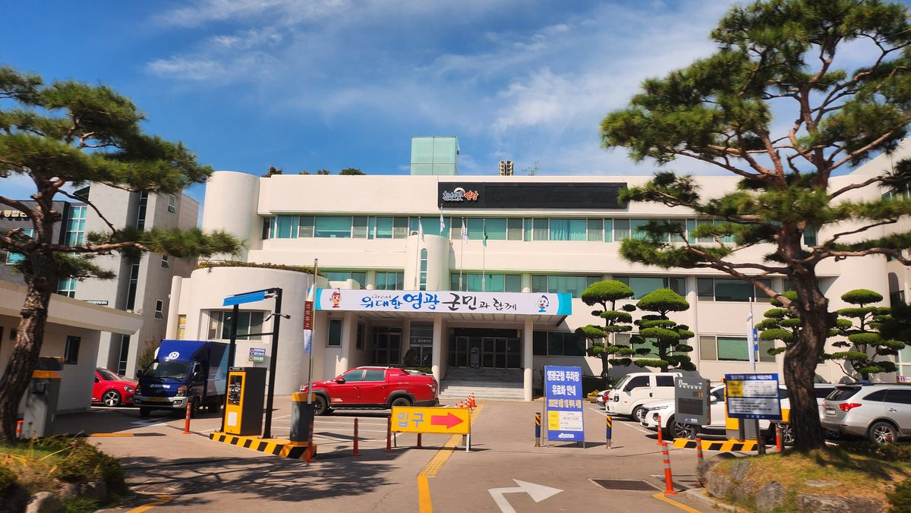

영광군, 2027년부터 군민 1인당 연 20만 원 재생에너지 이익 배당 추진

해상풍력 등 이익공유금·발전사업자 기부금이 재원…기부금 의존 한계에 정부와 사회보장제도 신설 협의, 4개 마을 195kW 태양광은 마을기금 적립
전남 영광군이 해상풍력 등 재생에너지 발전 이익을 군민에게 돌려주는 기본소득을 2027년부터 1인당 연 20만 원씩 지급하는 것을 목표로 제도 기반을 다지고 있다. 군은 2024년 12월 신·재생에너지 발전사업 군민 참여 및 개발이익 공유 조례를 만든 데 이어 지난해 5월 기본소득 기본 조례, 9월 공유화 기금 설치·운용 조례를 차례로 제정했다. 재원은 발전사업에서 나오는 이익공유금과 발전사업자의 자발적 기부금으로, 영광 앞바다에서는 해상풍력 약 3.1GW와 태양광 약 0.7GW 사업이 허가를 받아 진행 중이며 이 가운데 364.8MW 규모 낙월해상풍력은 지난해 12월 상업운전을 시작했다. 다만 민간 기부금에 기대는 구조여서 군은 정부와 사회보장제도 신설을 협의하고, 지방교부세법 등 관련 제도 개선도 국회와 정부에 건의하고 있다. 마을 단위로는 4개 마을의 195kW 태양광이 연간 약 256MWh를 생산하며, 50kW급 기준으로 초기 15년간 해마다 약 300만 원의 순수익을 마을 공동기금으로 쌓아 공동급식과 경로잔치 등 주민 복지에 쓴다.
시민에너지 관점
영광 앞바다에서 허가받은 해상풍력만 약 3.1GW에 이르는 만큼, 군민 배당이 얼마나 오래, 얼마나 크게 이어질지는 결국 주민이 사업 지분을 얼마나 갖느냐에 달려 있다. 기부금은 사업자 사정에 따라 줄어들 수 있다는 우려가 나오는 것도 그래서다. 미국 밀워키의 한 주민단체가 전력을 자산이라 부르며 주민 소유 태양광 50MW를 목표로 삼았듯, 배당은 남이 주는 돈이 아니라 주민이 가진 자산에서 나와야 오래간다. 인허가 단계부터 주민 지분 참여를 조건으로 거는 장치를 갖춰야 한다.
영광군은 공유화 기금에 이익공유금과 기부금이 해마다 얼마나 들어오고 어디에 쓰이는지 주민에게 정기적으로 공개해야 한다. 앞으로 인허가 단계에 들어서는 해상풍력과 태양광 사업에는 주민 지분 참여를 조건으로 거는 방안을 검토할 수 있다. 정부와 국회는 군이 건의한 사회보장제도 신설과 지방교부세법 개선을 검토해, 기부금에만 기대는 구조를 보완해야 한다. 4개 마을이 공동기금으로 공동급식과 경로잔치를 해 온 경험은 다른 마을로 넓혀 갈 수 있다.
출처: 더리포트 2026-10-21 이병석 원문 보기
霊光郡、2027年から郡民1人当たり年20万ウォンの再生可能エネルギー利益配当を推進
洋上風力などの利益共有金と発電事業者の寄付金が財源…寄付金頼みの限界から政府と社会保障制度の新設を協議、4集落の195kW太陽光は集落基金に積み立て
全羅南道霊光（ヨングァン）郡は、洋上風力など再生可能エネルギーの発電利益を郡民に還元する基本所得を、2027年から1人当たり年20万ウォンずつ支給することを目標に、制度の土台づくりを進めている。郡は2024年12月に新・再生可能エネルギー発電事業への郡民参加と開発利益共有に関する条例を制定したのに続き、昨年5月に基本所得基本条例、9月に共有化基金の設置・運用条例を相次いで制定した。財源は発電事業から生じる利益共有金と発電事業者の自発的な寄付金で、霊光の沖合では洋上風力約3.1GW、太陽光約0.7GWの事業が許可を受けて進んでおり、このうち364.8MW規模の落月（ナグォル）洋上風力は昨年12月に商業運転を始めた。ただ民間の寄付金に頼る仕組みのため、郡は政府と社会保障制度の新設を協議し、地方交付税法など関連制度の改善も国会と政府に求めている。集落単位では4集落の195kWの太陽光が年間約256MWhを発電しており、50kW級を基準に当初15年間は毎年約300万ウォンの純収益を集落の共同基金として積み立て、共同給食や敬老会など住民の福祉に充てる。
市民エネルギーの視点
霊光の沖合で許可を受けた洋上風力だけで約3.1GWに達する以上、郡民への配当がどれだけ長く、どれだけ大きく続くかは、結局住民が事業の持ち分をどれだけ持つかにかかっている。寄付金は事業者の事情で減りうるという懸念が出るのもそのためだ。米ミルウォーキーのある住民団体が電力を資産と呼び、住民所有の太陽光50MWを目標に掲げたように、配当は他人から受け取るお金ではなく、住民が持つ資産から生まれてこそ長続きする。許認可の段階から住民の持ち分参加を条件とする仕組みを整えるべきだ。
霊光郡は、共有化基金に利益共有金と寄付金が毎年どれだけ入り、何に使われるのかを、住民に定期的に公開すべきだ。今後許認可の段階に入る洋上風力や太陽光の事業には、住民の持ち分参加を条件とする案を検討できる。政府と国会は、郡が建議した社会保障制度の新設や地方交付税法の改善を検討し、寄付金だけに頼る構造を補うべきだ。4つの村が共同基金で共同給食や敬老の催しを続けてきた経験は、他の村へと広げていける。
出典: The Report 2026-10-21 Lee Byeong-seok 原文を読む
灵光郡推进从2027年起向每位郡民每年发放20万韩元可再生能源收益分红
财源为海上风电等收益共享金和发电企业捐款…因依赖捐款存在局限，正与政府协商新设社会保障制度；4个村195kW太阳能为村基金积累资金
全罗南道灵光郡正在打造制度基础，目标是从2027年起，把海上风电等可再生能源发电收益以基本收入形式返还郡民，每人每年发放20万韩元。灵光郡于2024年12月制定了关于郡民参与新能源和可再生能源发电项目及共享开发收益的条例，随后又在去年5月和9月相继制定了基本收入基本条例和共有化基金设立运营条例。财源为发电项目产生的收益共享金和发电企业的自愿捐款；灵光近海已有约3.1GW海上风电和约0.7GW太阳能项目获得许可并在推进中，其中364.8MW规模的落月（Nagwol）海上风电已于去年12月开始商业运行。不过，由于这一结构依赖民间捐款，郡政府正与中央政府协商新设社会保障制度，并向国会和政府建议修改《地方交付税法》等相关制度。在村级层面，4个村的195kW太阳能设施年发电约256MWh，按50kW级计算，最初15年每年约300万韩元的净收益存入村共同基金，用于集体供餐和敬老活动等居民福利。
市民能源视角
仅灵光近海获批的海上风电就达约3.1GW，郡民分红能持续多久、规模多大，最终取决于居民在项目中持有多少股份。之所以有人担心捐款会因企业情况而减少，原因也在于此。正如美国密尔沃基一个居民团体把电力称为资产、提出建设50MW居民所有太阳能的目标那样，分红只有来自居民自己拥有的资产而不是别人给的钱，才能长久。应当从许可阶段起就建立以居民参股为条件的机制。
灵光郡应定期向居民公开每年有多少利益共享金和捐款进入共享基金、用在了哪里。对今后进入许可阶段的海上风电和太阳能项目，可以研究以居民参股为条件。政府和国会应研究郡政府建议的新设社会保障制度和改进地方交付税法，弥补只依赖捐款的结构。4个村用共同基金举办集体供餐和敬老活动的经验，可以推广到其他村庄。
来源: The Report 2026-10-21 Lee Byeong-seok 查看原文
Yeonggwang County aims to pay residents 200,000 won a year from renewable energy profits starting 2027
Funding would come from offshore wind benefit-sharing payments and developer donations; reliance on donations has the county discussing a new social security program with the government, while 195 kW of village solar feeds village funds
Yeonggwang County in South Jeolla Province is laying the institutional groundwork for a basic income funded by offshore wind and other renewable energy profits, aiming to pay each resident 200,000 won a year from 2027. The county enacted an ordinance on resident participation in renewable energy projects and sharing of development profits in December 2024, followed by a basic income ordinance in May last year and an ordinance establishing and managing a commons fund that September. The money is to come from benefit-sharing payments from power projects and voluntary donations by developers; about 3.1 GW of offshore wind and about 0.7 GW of solar have been permitted off Yeonggwang's coast, including the 364.8 MW Nagwol offshore wind farm, which began commercial operation last December. Because the scheme depends on private donations, the county is discussing a new social security program with the central government and has asked the National Assembly and government to revise the Local Shared Tax Act and related rules. At the village level, 195 kW of solar in four villages generates about 256 MWh a year, and for each 50 kW-class plant about 3 million won in net profit is set aside each year for the first 15 years in a village fund used for communal meals, events for elders and other resident welfare.
Citizen Energy View
With about 3.1 GW of offshore wind permitted off Yeonggwang alone, how long and how large resident dividends last will ultimately depend on how much of the projects residents own. That is why there are concerns that donations could shrink depending on developers' circumstances. Just as a neighborhood group in Milwaukee in the United States has called power an asset and set a goal of 50 MW of resident-owned solar, dividends last when they come from assets residents own, not from money handed over by others. Mechanisms that make resident equity participation a condition from the permitting stage should be put in place.
Yeonggwang County should regularly tell residents how much benefit-sharing money and how many donations flow into the commons fund each year and what they are spent on. For offshore wind and solar projects that enter the permit stage from now on, resident equity participation could be considered as a condition. The government and the National Assembly should review the county's requests for a new social security scheme and changes to the Local Allocation Tax Act, to shore up a structure that relies on donations alone. The experience of the four villages that have used common funds for shared meals and celebrations for elders can be spread to other villages.
Source: The Report 2026-10-21 Lee Byeong-seok Read the original